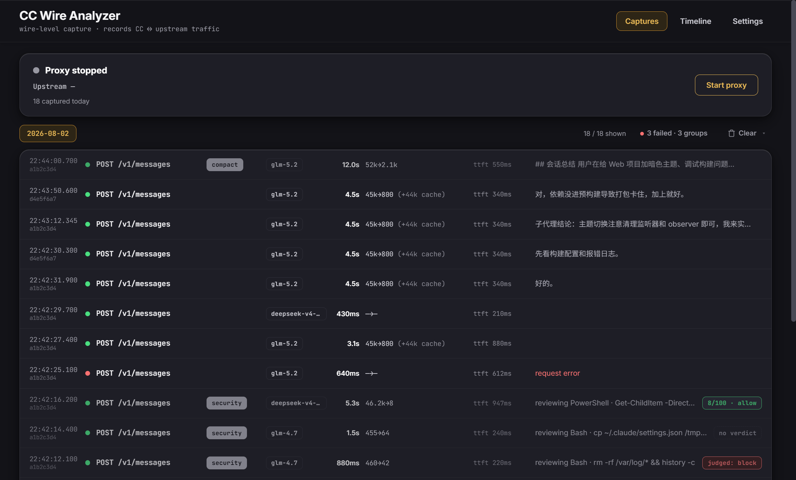
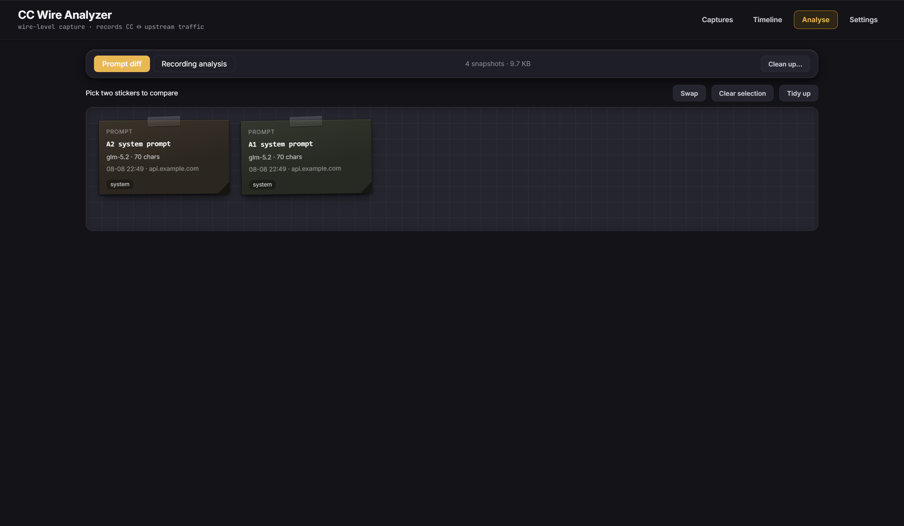

Prompts as transmitted
See the complete system prompt, injected reminders, title generation, compaction and security-review prompts.
Local wire-level observability
Claude Code shows its view of a session. CC Wire Analyzer records the full HTTP request and response before that view is post-processed: system prompts, tool schemas, hidden calls, SSE timing, upstream errors and exact token usage.

The missing layer
The wire is where Claude Code's real conversation with the model exists. Record it once, inspect it in the GUI, or let another agent query the same data over HTTP.
See the complete system prompt, injected reminders, title generation, compaction and security-review prompts.
Inspect every tool schema, the prompt that spawned a subagent and the request chain that followed.
Follow the streaming timeline and read failures that never surface in Claude Code's own session view.
The GUI and the open local HTTP API share one source, so an agent can search and diagnose a recording itself.
A failure CC did not show
The UI showed no error. The failed auxiliary requests were still present on the wire, already carrying the upstream's diagnosis.
GET /api/diagnose/errors output_config.effort 'max' is not supported when thinking is disabled on this model. settings.json effortLevel: low environment CLAUDE_CODE_EFFORT_LEVEL: max root cause: environment wins → contradictory request
Three complementary views
CC Wire Analyzer does not replace Claude Code logs or telemetry. It fills the one layer neither of them can represent: the raw exchange with the upstream endpoint.
Exact transmitted prompts, headers, bodies, SSE chunks, upstream errors and reported usage.
Conversation structure, local metadata and the session after Claude Code has processed it.
Aggregated latency, cost, token and operational telemetry across sessions.


Local by design
Requests still go to the upstream Claude Code was already using. The app records locally, redacts credential headers and changes one setting to route traffic through itself.
Plain JSONL under ~/.cc-wire-analyzer/. No account, cloud storage or telemetry.
Only ANTHROPIC_BASE_URL is patched; it is backed up and restored on stop or exit.
Authorization headers are not stored. Message bodies remain verbatim because that evidence is the product.
Optional AI analysis and update checks only run when you click them, against endpoints made visible to you.
Open source · local · inspectable
Download the Windows executable or macOS app, start the local proxy, then use Claude Code normally. No Python is required for release builds.